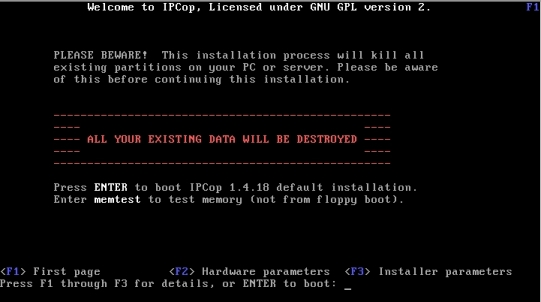
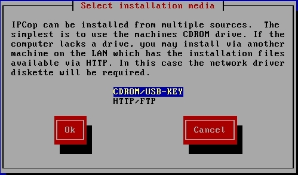
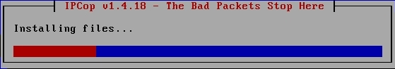
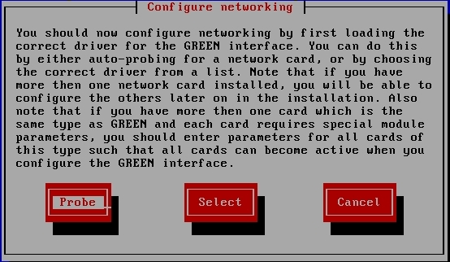
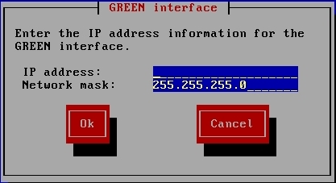

Install IPCop
- Insert the IPCop installation CD into your computer and restart the computer so that it boots off of the CD.
- Hit Enter at the startup screen.

- At the language selection screen, select English and hit Enter
- Hit Enter when the welcome message pops up.
- At the "Select installation media" page, select "CDROM/USB-KEY" because we are installing IPCop from a CD. Hit Enter.

- A message will come up telling you that the installation is going to
prepare the hard drive to install IPCop on it. Hit Enter. The partitioning and
installation of files may take several minutes, so be patient.

- Once the installation of files finishes, a "Restore" screen will come up
asking you if you have a backup of IPCop from another system. We do not, so
skip this screen and hit OK.
- A "Configure networking" screen will come up asking how you want to detect
your network cards. You have the option to "Probe" (have IPCop look for them by itself) or "Select" (select the specific model from a list). We want IPCop
to do the work for us, so select "Probe" and hit Enter.

- A screen should come up saying "IPCop has detected the following NIC in
your machine:" which means the probe worked. Hit OK.
- The "GREEN interface" screen should show up, requesting that you enter your IP address information. The GREEN interface is the internal network, so we are going to make it a 10.0.0 network. For the IP address, enter 10.0.0.1. The network mask should be automatically entered, but if it's not enter 255.255.255.0 and hit OK.

- The installation CD should pop out from the CD-ROM drive. Remove the CD and
hit OK at the Congratulations screen.
Now that you have successfully installed IPCop on your computer there are
some more configuration steps you need to take before you are able to properly
use IPCop. These configuration steps are covered in the next lesson.